01 — Kiadvány
Kijárat Kiadó
2020-ban közös könyvsorozatot indítottunk a Kijárat Kiadóval. A kötetek tudományos igénnyel, ugyanakkor közérthető formában írják le a digitalizálódó mindennapjainkat és kulturális gyakorlatainkat.
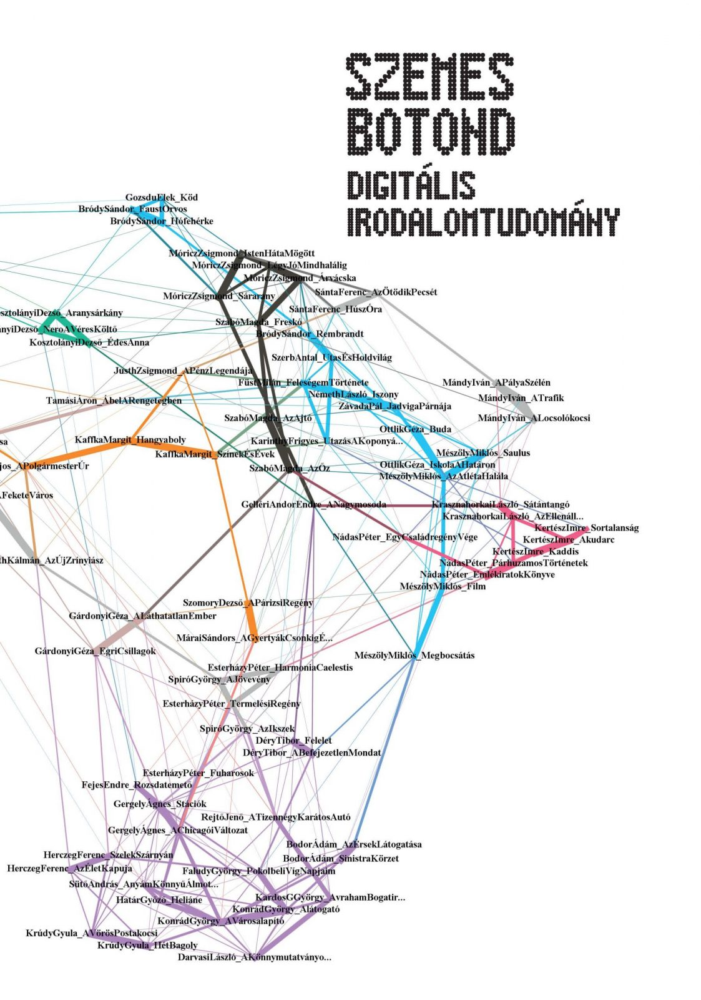
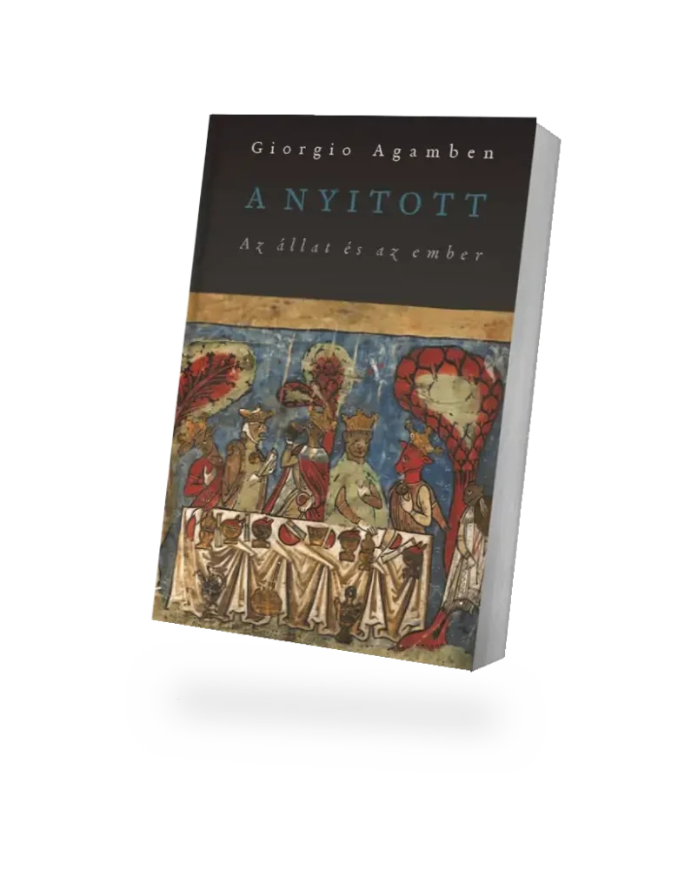
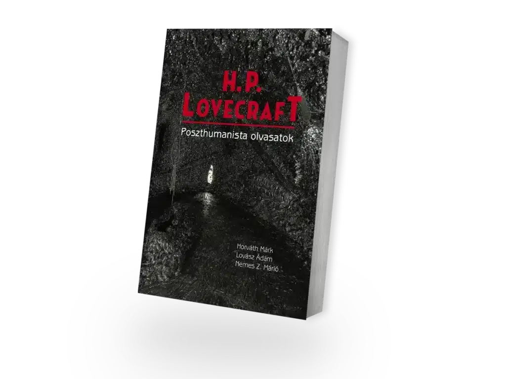
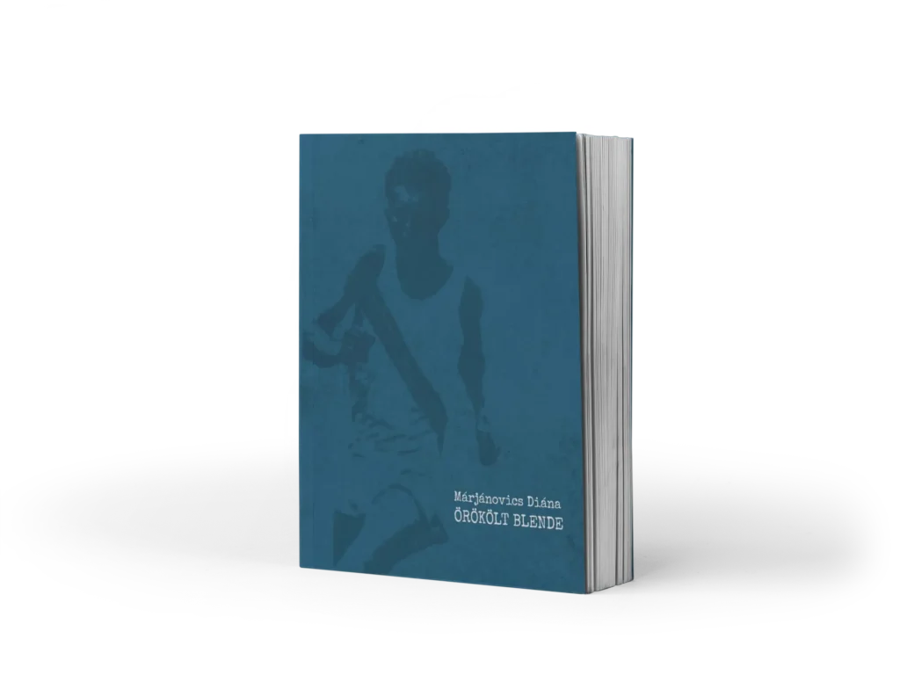
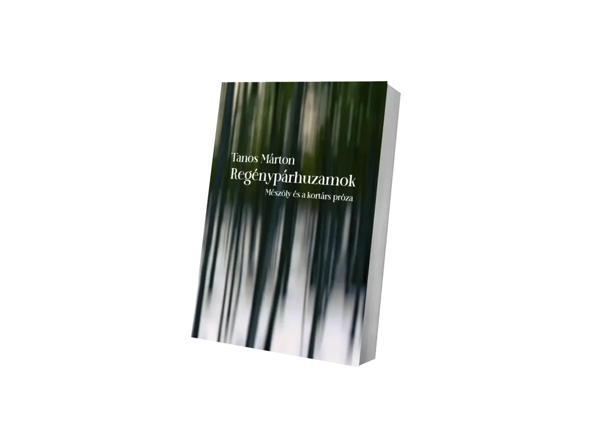
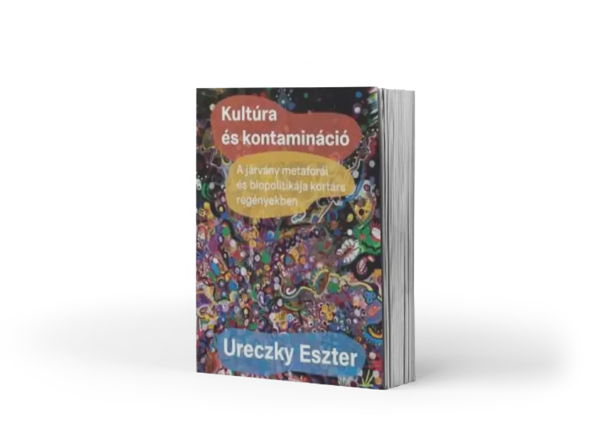
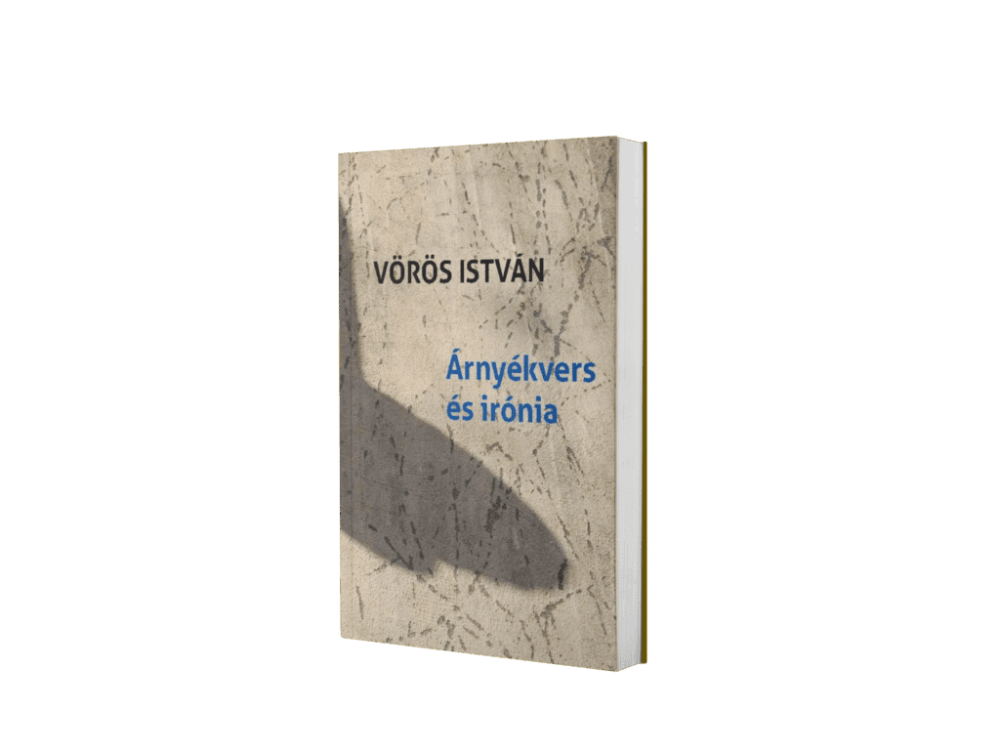
2020-ban közös könyvsorozatot indítottunk a Kijárat Kiadóval. A kötetek tudományos igénnyel, ugyanakkor közérthető formában írják le a digitalizálódó mindennapjainkat és kulturális gyakorlatainkat.
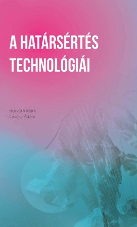
A Kijárat Kiadóval közös sorozat második kötete, a digitális kultúra és a normaszegés technológiai vonatkozásairól.
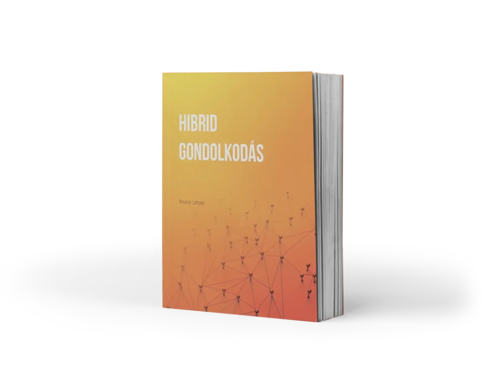
Bruno Latour írásainak magyar fordítása a sorozat részeként — a modernitás, a technológia és a hibrid entitások viszonyáról.
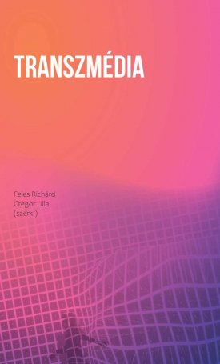
Tanulmánygyűjtemény a transzmediális elbeszélésmódokról és a médiumok közötti átjárásokról.
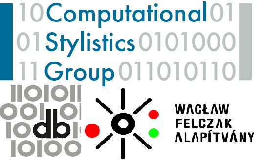
A Digitális Bölcsészet folyóirat különszáma a Wacław Felczak Alapítvány támogatásával, a krakkói kutatócsoport munkásságáról — nemzetközileg elismert műhely a számítógépes stíluskutatásban, ismert az R nyelvhez írt „stylo” csomagról.
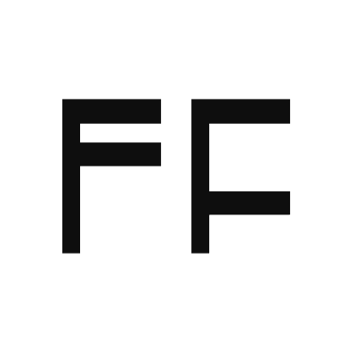
KA210-VET — kisléptékű partnerség a szakképzésben. Projektszám: 2022-1-HU01-KA210-VET-000083255.
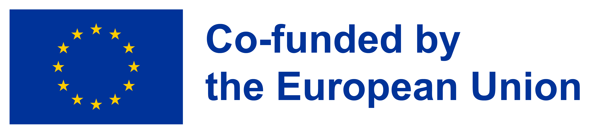
Non-academic music academy — zenészek gyűlnek össze stílustól és intézményi háttértől függetlenül, hogy tudást cseréljenek és kísérletezzenek. 2023-ban a művészi autonómia kérdését járták körül.
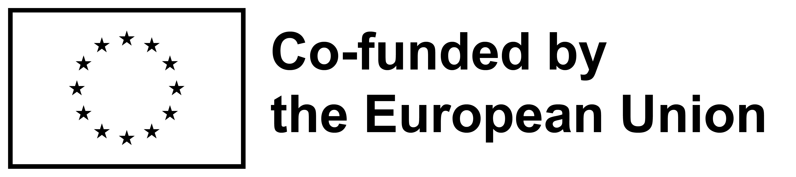
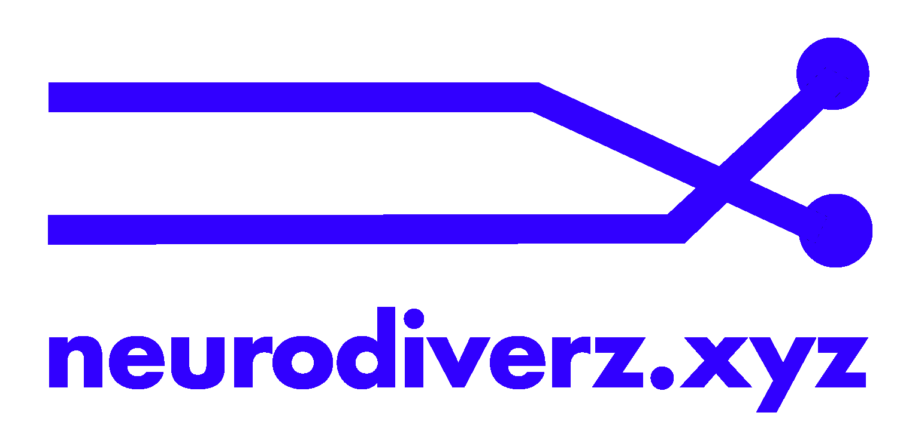
Fiatal felnőttek által kezdeményezett projekt, mely neurodiverz fiatalokból álló, 25 fős csapatot hozott össze, hogy közös tudás- és tapasztalatcsere révén ismeretterjesztő weboldalt építsenek.
A PAIKKA nyolc alkotót fogad 2025-ben — etnomuzikológusok, előadóművészek és képzőművészek sokszínű csoportja Európából, Ázsiából és a Közel-Keletről.
„Egy másik kameraállásból…” — felhívás projektmunka készítésére középiskolák 9–12. osztályos diákjai számára, Mészöly Miklós emlékére.
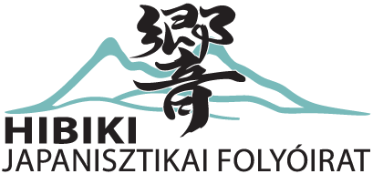
A HIBIKI japanisztikai folyóirat küldetése, hogy magyar nyelven, közérthető formában, hiteles információt nyújtson a japán kultúráról, és aktív közösséget építsen a téma iránt érdeklődők köré.
Kelemen Patrik (1992, Budapest) Budapesten élő táncművész és színházi alkotó — főként a tánc- és performanszművészet területén aktív, gyakran interdiszciplináris közegben. Tanulmányait Budapesten, Salzburgban és Brüsszelben végezte.